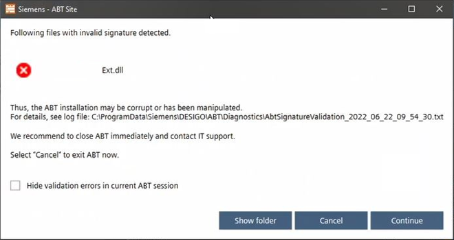

数据篡改检测
 WARNING
WARNING

网络攻击
操纵项目数据以及重新设计整个项目数据和 IT 基础设施的风险
- Only use official Siemens ABT Site installations.
- Open used ports only.
- Create regular project backups.
- Please refer to the Desigo cybersecurity guidelines (A6V13813955) for further information about hardening.
- To become more familiar with the Desigo cybersecurity, watch the cybersecurity video for PXC4/5/7 (on YouTube).
对 ABT 站点的网络攻击可能会对西门子设备或客户 IT 基础设施造成严重损坏。因此，ABT站点不断检查已安装的文件是否已被操纵。一旦检测到对文件的潜在操纵，就会通过对话框通知用户。

功能 | 描述 |
|---|---|
显示文件夹 | 打开日志文件位置 [安装的驱动器]:\ProgramData\Siemens\Desigo\ABT\Diagnostic\AbtSignatureValidation_[日期和时间] 的诊断程序文件夹。 错误消息示例：
|
取消 | ABT 网站将立即关闭。项目数据将保持其最后的持久状态。如果您有未保存的更改，根据您的工作流程，这些更改可能会丢失。我们建议关闭 ABT 网站并通知西门子支持部门或 /and 您的 IT 部门。 |
继续 | 用户了解信息的范围。例如，如果需要新的测试文件来运行函数，则可以使用此功能。 |
| 如果程序继续Continue:
|
 隐藏验证...
隐藏验证... 该消息可以在会话期间被抑制。
该消息可以在会话期间被抑制。